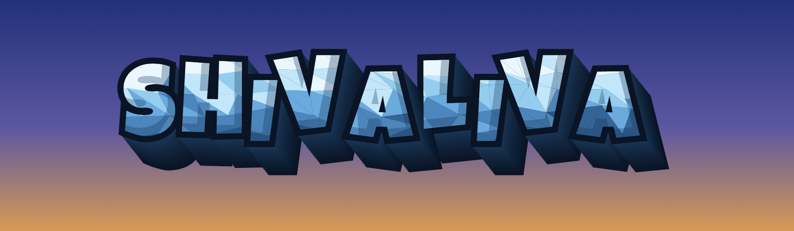
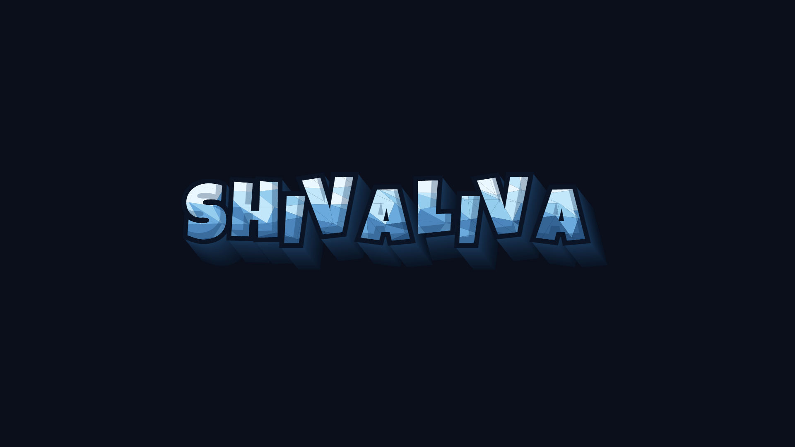
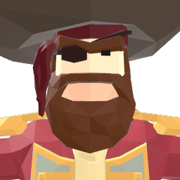

Description
Short description
Shivaliva Shanty is a single-player puzzle-skill adventure set among floating sky-islands. Four of its six mini-games are jobs on the island; the other two are the tavern's tables. Every islander you meet answers you in their own voice, knows what is going on in the room, and remembers what you did.
The demo puts you on one island, Cradle Rock. You arrive as nobody. You take work at the mine, the grove, the tavern sink and the coin table, and each job is a different puzzle with its own rules. You sit down at the inn's poker table. You walk into the Cradle Gym and climb its five-rung ladder in Skirmish, a two-board versus block puzzle where your cleared lines land on your rival's floor. When the ladder is done, the Labyrinth Ordeal is next, reached from the Cradle Gym. The demo ends when you have earned enough to buy passage off the rock at the skydock.
The islanders are the part that makes it a Shanty rather than a menu of puzzles. Walk up to any of the ten and talk. They know where they are standing, what they are doing, and who just won at the table. They remember your last conversation the next day. Word about you travels: win at the gym and the barkeep has heard about it before you reach the bar. Needle a fighter about their record and they may challenge you for it.
It is a spiritual successor to Puzzle Pirates, made by one person in Godot, and grown into its own thing: a sky instead of a sea, a void called the Stardust reached from the Cradle Gyms, and a cast that talks back.
History
The game has been public on itch.io since June 2026 as a Windows download, and over June and July Cradle Rock was rebuilt as a 3D island.
On 16 July 2026 it gained version numbers (v0.1.0), printed in the corner of the title screen so every bug report could quote them.
On 17 July the backpack and shops started showing every item as itself, in 3D, and clothes became buy-then-wear with dyes you purchase once and keep.
On 1 August the title screen became key art, and the itch page was refreshed with shots of the 3D island.
On 13 August (v0.10.0) a portrait-based character creator arrived with 23 faces, 38 haircuts and 18 beards, along with a loading screen and a Blind Run option that switches off all guidance.
Between 16 and 21 August all six mini-games were converted from flat boards into 3D rooms without changing a rule. v1.0.0 followed on 22 August, v1.1.0 on 27 August made the island continuous terrain, v1.1.4 came on 28 August, and the current build, v1.3.1, on 1 September 2026.
Features
What the public demo contains.
- One island, Cradle Rock. A small island with a tavern, a forge, a market, a gym, a mine, a grove and a skydock. The demo ends when you buy passage off it.
- Six mini-games: four jobs and the tavern's two tables. Mining (a forage grid carved into rock), Coin Drop (the tavern's coin table, a pegboard the coins bounce down), Lumberjacking (a log frame in the grove), Dish Duty (the tavern sink), Skirmish (a two-board versus block puzzle: clear lines and steel lands on your rival's floor) and Poker (the inn's table, ten stools round it).
- The Cradle Gym ladder. Five rungs of Skirmish against named islanders, then the Labyrinth Ordeal, reached from the Cradle Gym.
- Islanders who talk back. Ten named characters. Each knows the room they are standing in, what they are doing, and what just happened. They remember you between conversations, and they pass word about you across the island.
- Character creator. Every option shown as a portrait: 23 faces, 38 haircuts, 18 beards, brows, scars and war paint. You start in plain clothes and buy the rest.
- One currency. Gold. A shop that shows the item itself, not an icon, dyes you buy once and keep, a backpack, and a chart of the island.
- Everything drawn in 3D. Every board is a room with objects in it, and the rules underneath are unchanged.
- Windows, free, no sign-up. About 136 MB.
After the demo
The full game continues past the dock. Planned for after the demo: your own ship and voyages between islands, boarding and sea battle, a second island called Driftspar, courting islanders, a house you can buy and furnish, and four ship duty-station puzzles (Lofting, Patchworks, Sailing, Starfix). None of these are in the demo.
Videos
Longer capture of each mini-game (Mining, Coin Drop, Lumberjacking, Dish Duty, Skirmish, Poker) and of the character creator is available on request, 1280x720 MP4, 1.4 to 5.7 MB each, captured on v1.1.1. Ask via the Contact section.
Images
Nine screenshots, 1280x720 PNG, captured on v1.1.1 and v1.3.1 (Coin Drop, Lumberjacking and Dish Duty are from v1.3.1; the other six are from v1.1.1, 28 August). Click for the full-size file. All nine are in presskit.zip.


Logo & Icon
The wordmark is the logo. Please use it as supplied: no recolouring, no added emblem, and never re-typeset as text.

{kind=link}

{kind=link}

{kind=link}

Credits
Trojan Bulldog: design, code, world, writing, and everything not listed below.
Art
Characters and environments use Synty POLYGON asset packs and Mixamo animations, used under their respective licences.
Music
Epic Medieval Music Pack I by pegonthetrack & ELVGames (purchased licence). Tracks used: Theme, Clear Waters, Sewage, War, Fortified, End of the Road. Credits to pegonthetrack & ELVGames: elv-games.itch.io, linktr.ee/pegonthetrack.
Sound
| Files | Origin | Licence | Credit |
|---|---|---|---|
voice_talk.ogg, voice_talk2.ogg | "Talking Synthesizer" by tcarisland (OpenGameArt), via GDQuest Learn 2D Gamedev | CC-BY-SA 4.0 | "Talking Synthesizer" by tcarisland (CC-BY-SA 4.0) |
type_key.wav | "Keyboard soundpack 1" by unicaegames (OpenGameArt), via GDQuest Learn 2D Gamedev | CC0 | none required (credit appreciated) |
pickup.wav, powerup.wav, hit.wav, bop.wav, hurt.wav, ko.wav, pain.wav, laser.wav | GDQuest "Learn 2D Gamedev with Godot 4" | CC-BY 4.0 | Additional assets CC-By 4.0 GDQuest (https://www.gdquest.com/) |
explosion.ogg | Kenney (Sci-Fi Sounds / Digital Audio), via GDQuest Node Essentials | CC0 | none required (Kenney, https://kenney.nl, credit appreciated) |
UI, puzzle and world effects: error, accept, decline, window_open, window_close, trophy, puzzle_soft, puzzle_bright, rock_break, wood_break, item_get, fall, swish, chest | Universal Sound Effects: User Interface Pack 1 (Puzzle Game), User Interface Pack 2, Game Sound Effects 2 | Purchased licence | none required |
coin, clack, pop, whoosh, thunk, chime, buzz, click, toss | Procedural placeholders synthesised in-engine, original to this project | Original | none |
Shivaliva Shanty is not affiliated with or endorsed by Synty Studios, Mixamo, GDQuest, Kenney or Three Rings.
Contact
- Game page and devlog: tairoyzone.itch.io/shivaliva-shanty
- Developer profile: tairoyzone.itch.io
- X: @trojanatoplat
- Email: tairoy.zone@gmail.com
Keys, interviews and the full-length clips: send a message on either channel above.